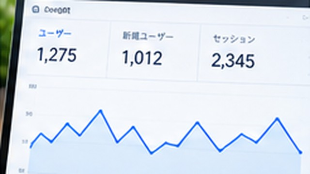

Webサイトを公開したら何をする？SEO・アクセス解析・サイト改善まとめ
Webサイトを公開したら何をする？SEO・アクセス解析・サイト改善まとめについて、初心者向けに具体的な手順・例・注意点を交えて解説します。

Webサイトを公開したら、次はGoogleに見つけてもらえる状態を整える → アクセスを計測する → 実際のデータを見て改善するの順で進めます。
公開ボタンを押しただけで運営が終わるわけではありません。
1. 公開URLを自分で確認する
まずスマホとPCで主要ページを開きます。
- リンク切れがないか
- 画像が表示されるか
- HTTPSで開けるか
- メニューから主要ページへ移動できるか
- 404ページが出ないか
を確認します。
2. Google Search Consoleを設定する
Search Consoleを使うと、Googleがページを認識しているか、どんな検索クエリで表示されたかなどを確認できます。
登録しなければGoogle検索に出ないわけではありませんが、サイト運営者が状態を確認するために便利です。
3. sitemap.xmlを用意する
サイトマップは、サイト内の重要なURLを検索エンジンへ伝えるためのファイルです。
CMSやサイト生成ツールが自動生成する場合もあります。自動生成されているなら手作業で毎回書き換える必要はありません。
sitemap.xmlとは？必要な理由と基本的な作り方を解説
4. アクセス解析を設定する
「何人来たか」だけでなく、どのページが読まれているか、どこから来たかなどを確認できるようにします。
Google Analytics（GA4）を使う方法のほか、利用しているサービスにアクセス解析機能があればそれを使う方法もあります。
5. 公開後のデータから改善する
公開直後はデータが少ないので、何でも変更する必要はありません。
検索表示が増えてきたらSearch Console、実際の閲覧状況はアクセス解析を見て、
- 読まれている記事から関連記事へリンクする
- 検索意図とタイトルがずれていれば修正する
- 読者が次に知りたい記事を追加する
といった改善をします。
ワカルカモでは公開後をこう管理しています
ワカルカモではGitHub Pagesで公開し、Search ConsoleとGA4を導入しています。記事を公開するだけでなく、検索クエリやサイト内検索などを今後の記事テーマ・改善材料として使う構成です。
このグループでわかること

企業の情報システム・DX推進・マーケティング業務などを経験。PC・Webサービス・業務自動化など、実際に試して分かったことを初心者向けに解説しています。
運営者情報を見る →